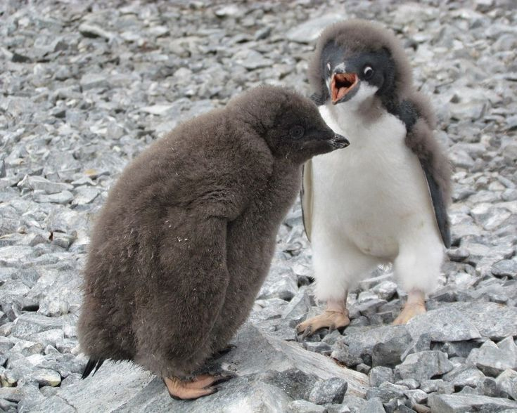
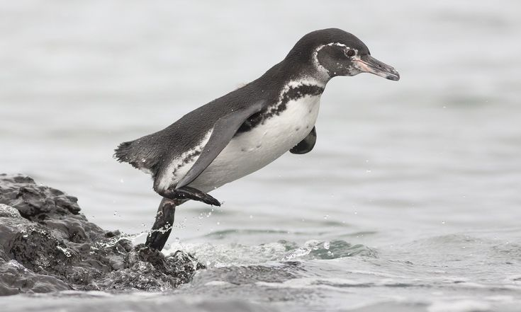
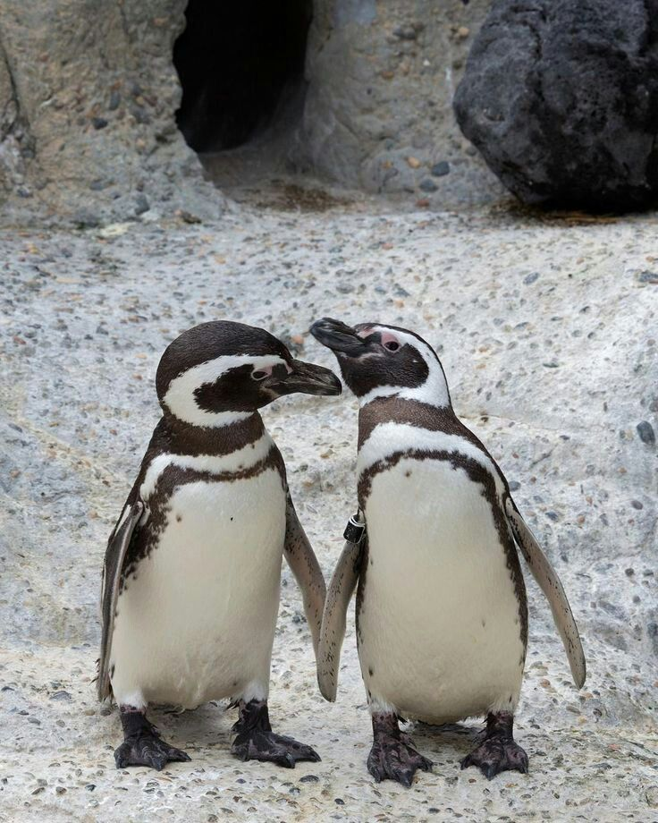
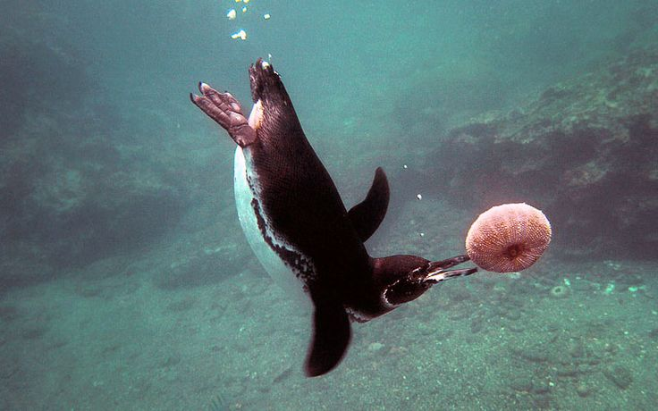
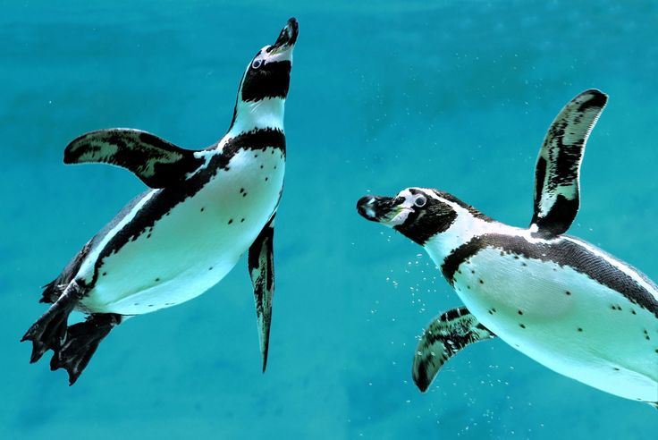
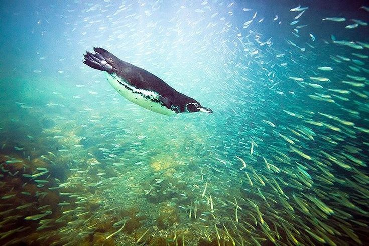

Pingüino Galápagos
Spheniscus mendiculus
Es la única especie de pingüino que vive al norte del ecuador. Están adaptados a climas tropicales y sobreviven gracias a las frías corrientes oceánicas.
Es la única especie de pingüino que vive al norte del ecuador. Están adaptados a climas tropicales y sobreviven gracias a las frías corrientes oceánicas.



49 — 53 cm
1.5 — 2.5 kg
Islas Galápagos
Sardinas y salmonetes



